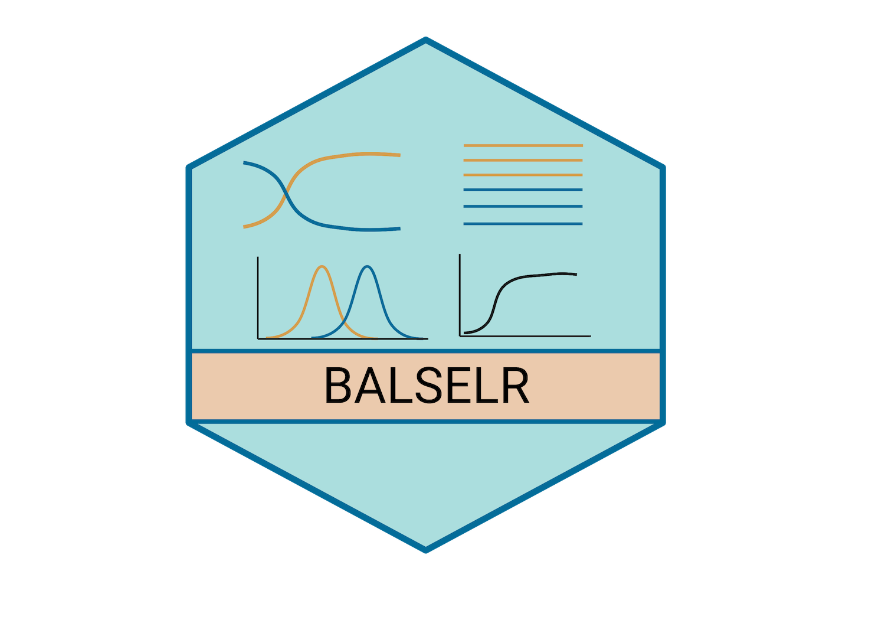

What is balselr?
Balancing selection with R allows you to run NCD statistics to detect long-term balancing selection in genomic datasets.
Original paper describing the NCD statistics: Bitarello, De Filippo, Teixeira, Schmidt, Kleinert, Meyer & Andrés (2018). Signatures of long-term balancing selection in human genomes. Genome biology and evolution, 10(3), 939-955. Link
Installation
You can install the development version of balselr from GitHub with:
# install.packages("devtools")
library(devtools)
devtools::install_github("bitarellolab/balselr")
library(balselr)Example
This is a basic example which shows you how to read in a vcf file:
read_vcf(x=system.file(package = "balselr", "example.vcf"))This is an example which shows how to parse a vcf file and output an input file for ncd1:
parse_vcf(
infile = system.file(package = "balselr", "example.vcf"),
n0 = 108,
type = "ncd1"
)This is an example which shows how to parse a vcf file and output an input file for ncd2:
parse_vcf(
infile = system.file(package = "balselr", "example.vcf"),
n0 = 108,
n1 = 2,
type = "ncd2"
)Run ncd1 (tf=0.5) with a 3000 basepair window and a minimum of 8 informative sites per window using 2 cores:
Run ncd2 (tf=0.5) with a 3000 basepair window and a minimum of 2 informative sites per window using 2 cores: